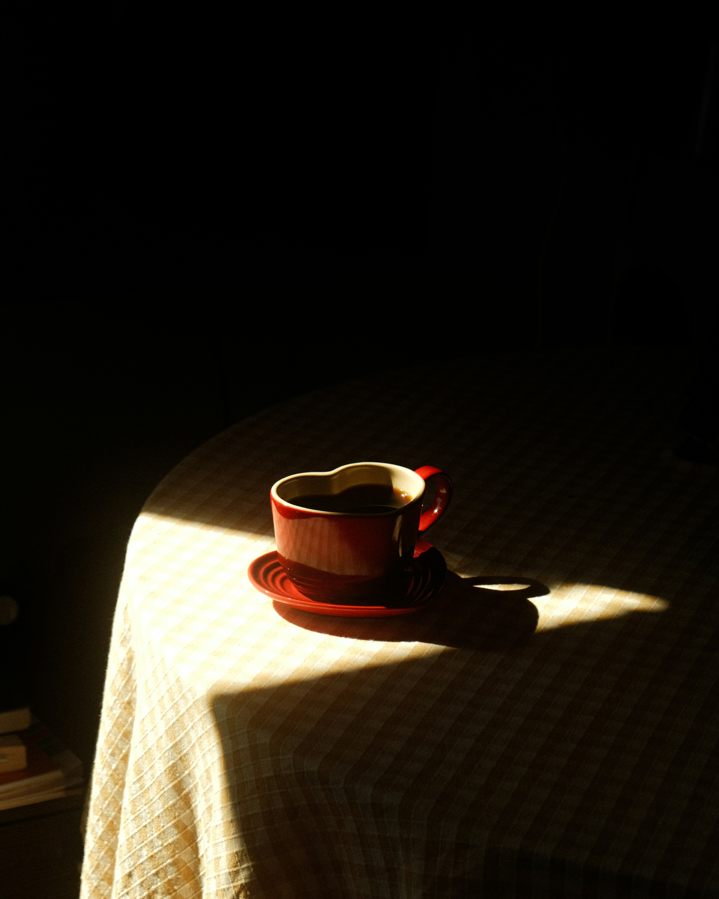

The In-Between

Soft beginnings. A cup of tea, sun spilling across the floor, a quiet breath before the day unfolds.

Time that stretches without pressure. Tasks done with care, movement without rush, moments that feel like they belong only to you.
Wind through tall grass. Clouds drifting lazily. Space to pause, to notice, to feel calm.
Growth doesn't have to be loud. It can be subtle, patient, and unfolding quietly in the background of your days.
“Some days glow more softly than others — but they glow all the same.”